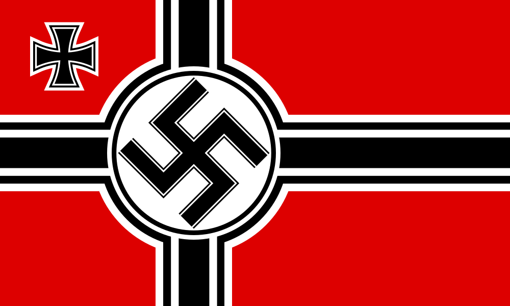
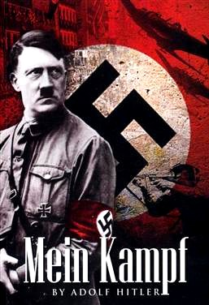

Odata ajuns la putere, Hitler a instaurat o dictatura absoluta. Si-a asigurat acordul presedintelui pentru organizarea de noi alegeri. Incendierea Reichstagului in noaptea de 27 februarie 1933 (probabil actiunea unui comunist olandez, Marinus van der Lubbe) a furnizat pretextul pentru promulgarea unui decret ce suprima toate libertatile si pentru intensificarea violentelor.
Doua zile mai tarziu, actul de Imputernicire, care ii conferea puteri depline lui Hitler, a fost votat de Reichstag cu ajutorul voturilor combinate ale deputatilor nazisti, nationalisti si ai Partidului Catolic de Centru (23 martie 1933). Dupa mai putin de trei luni, toate partidele si organizatiile nenaziste, cat si uniunile sindicale si-au incetat existenta. Disparitia Partidului Catolic de Centru a fost urmata in luna iulie de Concordatul Germaniei cu Vaticanul.
Redresarea economica si o reducere rapida a somajului (care coincidea cu cea de pe plan mondial, dar despre care Hitler a sustinut ca i se datoreaza) au facut regimul tot mai popular, iar combinatia intre aceste succese si politica de teroare a intrunit 90% din voturile electoratului in cadrul unui plebiscit.
Fiecare repudiere a unui tratat era insotita de oferta pentru negocierea unuia nou si de insistenta asupra naturii limitate a ambitiilor Germaniei. Numai o data nazistii au intrecut masura si si-au facut gresit calculele: cand nazistii austrieci, cu complicitatea organizatiilor germane, l-au asasinat pe cancelarul Engelbert Dollfuss al Austriei si au incercat o revolutie (iulie 1934). Tentativa a esuat si Hitler a negat orice legatura cu actele respective. In ianuarie 1935, un plebiscit in Saar a aprobat cu peste 90% din voturi realipirea acestui teritoriu la Germania. In martie acelasi an, Hitler a introdus serviciul militar obligatoriu. Desi aceasta actiune a provocat proteste din partea Frantei, Marii Britanii si Italiei, opozitia a fost destul de redusa, iar diplomatia pacii promovata de Hitler a avut suficient succes pentru a convinge Marea Britanie sa negocieze un tratat naval (iunie 1935), recunoscand dreptul Germaniei de a-si construi o flota considerabila.
In noiembrie 1937, la o intalnire secreta cu conducatorii militari, Hitler a schitat planurile pentru cuceririle viitoare (incepand cu Austria si Cehoslovacia).
S-a reintors in triumf la Viena, scena umilintelor si vietii grele duse aici in tinerete. Hitler nu a intampinat nici o rezistenta din partea Marii Britanii sau a Frantei in ce priveste aceasta actiune. A acordat insa o atentie speciala asigurarii sprijinului Italiei; la primirea acestuia si-a proclamat recunostinta eterna fata de Mussolini.
Pe 5 martie 1939 a sosit la Praga, unde a declarat ca restul „Cehiei” va deveni protectorat german. Cateva zile mai tarziu (23 martie), guvernul lituanian a fost silit sa cedeze Germaniei Memel (Klaipeda), de la frontiera de nord cu Prusia Orientala.
Puciul de la berărie (în germană numit Hitlerputsch sau Hitler-Ludendorff-Putsch) a fost o tentativă eșuată de lovitură de stat ce a avut loc între seara zilei de joi, 8 noiembrie, și după amiaza zilei de 9 noiembrie 1923, când liderul partidului nazist, Adolf Hitler, împreună cu generalul Erich Ludendorff, ambii veterani ai Primului Război Mondial, precum și alți lideri ai organizației Kampfbund au încercat să preia puterea politică în München, Bavaria și Germania.
Cu zece ani inainte de a prelua puterea in Germania, in urma unor alegeri democratice, Adolf Hitler, cel care avea sa arunce lumea in haosul celui de-al doilea razboi mondial, a incercat sa ajunga la putere printr-o lovitura de stat. Aceasta incercare a ramas cunoscuta in istorie sub numele de „puciul de la berarie”, din cauza faptului ca principalii complotisti si-au pus la cale planul intr-o berarie din München, numita Bürgerbraukeller.
Liderul complotistilor a fost Adolf Hitler, un fost caporal care luptase in transeele primului razboi mondial si considera ca distrugerea puterii si prestigiului Germaniei era cauzata de guvernarea proasta. Hitler a inceput sa agite spiritele tinand, in toamna anului 1923, mai multe mitinguri, in Bavaria. Ingrijorat, conducatorul landului bavarez, Eugen von Knilling, a declarat starea de urgenta si i-a insarcinat pe trei ofiteri de rang superior cu mentinerea ordinii. Hitler a reusit sa-l convinga pe unul dintre cei trei, Ritter von Kahr, sa treaca de partea lui si a miscarii sale. Ofiterul isi dorea sa restaureze monarhia, in cazul unei lovituri de stat reusite, in vreme ce Hitler isi dorea sa devina un conducator cu puteri absolute.
Planul lor a fost inspirat de „marsul asupra Romei” reusit de Mussolini, in Italia; dar, nemultumit de lentoarea lui von Kahr, Hitler a preluat singur aplicarea planului. El voia sa foloseasca Münchenul ca baza impotriva Republicii de la Weimar. Münchenul a fost, dupa primul razboi mondial, scena unor instabilitati politice majore. Aici a luat nastere social-nationalismul, nazismul german.
Hitler, alături de alţi lideri ai partidului, este prins şi condamnat la cinci ani închisoare pentru trădare. Aşa ajunge la fortăreaţa de la Landsberg, Bavaria, unde este închis timp de nouă luni. Viitorul führer îşi valorifică timpul petrecut la închisoare scriind ”Mein Kampf” (Lupta mea), carte ce avea să devină baza doctrinei sale naziste şi punctul de plecare pentru ”Soluţia finală” implementată de nazişti în cel de-Al Doilea Război Mondial, când milioane de evrei din toată Europa au fost exterminaţi, fiind consideraţi o ”rasă impură”, care trebuia eliminată.
Mein Kampf (în română Lupta mea) este o carte scrisă de Adolf Hitler în două volume:
Eine Abrechnung (O socoteală) , publicată la 18 iulie 1925
Die nationalsozialistische Bewegung (Mișcarea național-socialistă), publicată în 1926.
Cele aproape 500 de pagini ale ”Mein Kampf”, structurate în două volume, cuprins, aproape la fiecare filă, referiri la evrei şi la rolul lor ”nefast” în istoria şi declinul Germaniei.
Profesorul de istorie Viorel Mărginean spune că Teoria raselor expusă de Hitler în ”Mein Kampf” nu este una originală. ”Primul care a emis teoria potrivit căreia ar exista rase superioare şi rase inferioare a fost francezul Joseph Arthur de Gobineau. Hitler nu a fost nici măcar original”, explică profesorul. Potrivit acestuia, teoria raselor, ”completată” de Hitler, spune că în lume există rasa ariană, rasa pură, rase impure (evreii şi ţiganii) şi rase inferioare (latinii, slavii, asiaticii şi populaţia de culoare). ”Rolul arienilor este, potrivit teoriei, cel de a conduce lumea, în timp ce rasele inferioare trebuie să devină sclavii arienilor. Rasele impure trebuie să dispară”, punctează Mărginean.
-
”Evreul este cel care îndeamnă astăzi cu cea mai mare râvnă la distrugerea radicală a Germaniei. Tot ceea ce se tipăreşte în lumea întreagă împotriva Germaniei este scris de evrei.”
”Unui asemenea popor existenţa pe pământ îi va fi luată cu forţa.”
”Cine nu este sănătos, fizic şi moral, şi în consecinţă nu are valoare din punct de vedere social, nu trebuie să-şi perpetueze bolile în trupul copiilor săi.”
”Tânărul evreu cu păr negru o pândeşte, ore întregi, cu faţa luminată de o bucurie diabolică, pe tânăra fată inconştientă de pericol, pe care o mînjeşte cu sîngele său şi o răpeşte astfel poporului din care provine.”

Cartea este interzisă şi astăzi în Germania
Din cauza profundelor sale mesaje antisemite, cartea a fost interzisă în Germania la scurt timp după Al Doilea Război Mondial, având acelaşi statut şi astăzi, drepturile de editare ale cărţii fiind blocate de autorităţile din Bavaria, care au confiscat proprietăţile lui Hitler şi toate bunurile sale intelectuale imediat după război. Presa internaţională a scris, la începutul acestui an, că în 2016 drepturile landului Bavaria expiră, moment în care s-ar putea vorbi despre o reeditare a cărţii.
Succes la public în România
În România, cartea a fost interzisă în perioada comunistă, dar a fost publicată, după Revoluţie, de câteva edituri. S-a vândut ca pâinea caldă, iar cei care nu au apucat să o cumpere se înghesuie acum în biblioteci, pentru a afla cum gândea un om care se face vinovat de moartea a peste 6 milioane de evrei, plus soldaţii care şi-au pierdut viaţa în cel de-Al Doilea Război Mondial.
Păreri asupra cărții lui Adolf Hitler venite de la cititori români
”Am citit din curiozitate. Cruzimea acestui personaj din istoria lumii m-a determinat să îi cunosc gândurile aşternute în scris, ştiind că tot ce facem în viaţă, faptele noastre, au cauze adânci, de multe ori acestea regăsindu-se în primii ani de viaţă, sau chiar înainte de naştere, în trăirile părinţilor, strămoşilor”, un tânăr de 19 ani, din Zalău.
Tudor (24 de ani) spune că a citit carte „din revoltă: cum este posibil ca un alienat, un obsesiv, un aberant a fost lăsat să conducă, să-şi pună în practică delirul de grandoare, pofta de hegemonie, dorinţa de distrugere… din păcate aceste fapte nu au cutremurat lumea în aşa măsură, încât să nu mai ajungă în puncte de conducere oameni paranoici”.
Tudor (24 de ani) spune că a citit carte „din revoltă: cum este posibil ca un alienat, un obsesiv, un aberant a fost lăsat să conducă, să-şi pună în practică delirul de grandoare, pofta de hegemonie, dorinţa de distrugere… din păcate aceste fapte nu au cutremurat lumea în aşa măsură, încât să nu mai ajungă în puncte de conducere oameni paranoici”.
Hitler a supravietuit multor atentate de asasinare. Cel mai important a fost cel de pe 20 iulie 1944.
O conferinta importanta, care urma sa marcheze ofensiva sovietica in Galitia, a fost convocata pentru 20 iulie 1944 la Wolfsschanze. Trei zone ale buncarului sunt inconjurate cu retele de sarma ghimpata, dintre care unele, conectate la curent electric, de inalta tensiune. Pentru a intra in fiecare zona, trebuie prezentate legitimatii diferite, care sunt sever controlate. Oberfuhrerul SS Rattemhuberm este seful serviciului de protectie al Fuhrerului. Extrem de bine pazit, Hitler ocupa Wolfsschanze. Conferinta are loc intr-o sala lunga de 10 metri si larga de 5 metri, cu 10 ferestre, toate deschise din cauza caldurii. In mijloc, o masa de lemn masiv, mare si grea, denumita "Masa de harti" lunga de 6 metri si lata de 1.20 metri si cu o grosime de 10 cm.
La 19 iulie, Stauffenberg este convocat la Rostenburg, pentru a doua zi; trebui sa prezinte un raport Fuhrerului si, asa cum anunta Olbricht el pleaca "cu o incarcatura plina".
Joi, 20 iulie, la ora 14:30, Mussolini, refugiat acum in Germania, urma sa faca o vizita la marele cartier general, prietenului sau. Orarul fusese stabilit cu precizie.
Keitel se pregateste sa se indrepte spre "baraca". Stauffenberg se izoleaza pentru moment. Scoate din servieta bomba, care este de fabricatie englezeasca. Aceste bombe, destinate sabotajelor, nu sunt prevazute cu un mecanism de ceas, ce e drept indiscret si revelator, dar care permite o declansare mult mai precisa, decat un procedeu chimic. Pentru declansarea exploziei, la aces tip de bomba, trebuie sparta o mica fiola de sticla, continand un acid; acest acid, ataca firul metalic, care contine percutorul, impiedicandu-l sa loveasca detonatorul si, dupa zece minute, percutorul eliberat provoaca exoplozia.
Cu cele trei degete ale sale, colonelul Claus von Stauffenberg amorseaza bomba, ajutandu-se de un cleste plat. Odata bomba amorsata, el o introduce in servieta. Deci, explozia va avea loc peste 10 minute. Keitel care se teme enorm de orice intarziere in fata Fuhrerului, il cheama cu nerabdare. In trei minute ei ajung la baraca. Ofiterii care urmeaza sa ia parte la conferinta, asteapta in fata usii. Locotenent - colonelul Nicolaus von Below al doilea aghiotant al fuhrerului, ii invita sa intre. Hitler soseste, si conferinta incepe la orele 12:30. Douazeci si cinci de persoane, inclusiv Stauffenberg, se afla in sala.
Intrand, Stauffenberg, l-a informat pe subofiterul de serviciu, la telefon, ca o comunicare urgenta, ii va fi transmisa de la Berlin. Keitel il informeaza pe Hitler ca Stauffenberg va prezenta un raport, privind crearea de noi divizii; Hitler ii intinde mana. Stauffenberg isi pune servieta sub masa cu harti, la dreapta colonelului Brandt. Dupa cateva clipe, el paraseste sala, spre a lua, spune el lui Keitel, o comunicare telefonica de la Berlin, de unde trebuie sa-i vina precizari in vederea completarii raportului.
Servieta pe care o lasase jos se afla la mai putin de 2 metri de fuhrer. Colonelul Brandt, lovindu-se insa de servieta lui Staufferberg cu piciorul, ii schimba locul, ceea ce nu numai ca o indeparteaza de fuhrer, ci o plaseaza astfel incat intre hitper si servieta se afla unul din cele doua socluri de lemn masiv pe care se sprijina masa. Sarmanuol colonel Brandt nu este mai informat acum de ceea ce se va petrece decat fusese in martie 1939, cand i se incredintase in avionul fuhrerului, un pachet cu doua sticle de coniac, in realitate explozivi destinati sa omoare pe toti pasagerii.
La ora 12:42, in timp ce Hitler, in picioare se apleca spre o harta intinsa pe masa, s-a produs explozia.
Generalul Jodl va spune "Am crezut ca o lustra enorma ne-a cazut in cap". Raportul SS-ului asupra atentatului, semnaleaza stricaciuni considerabile: o gaura de 55 centimetri diametru in podeaua care a fost transformata in aschii de marimea chibriturilor; de jur imprejur, solul era rascolit, masa sparta, plafonul crapat; bucati de lemn si de pieleinfipte in perete; printre daramaturi, bucatele mici si foarte mici de piele si metal provenind dintr-o servieta.
Un stenograf a fost facut bucati dupa ce picioarele i-au fost sfaramate. Sunt multi raniti. Colonelul Brandt de la biroul de operatii al statului major general, a servit drept scut fuhrerului. El va muri spre seara. Generalul Korten, sef al staului major, al fortelor militare aeriene, moare a doua zi. Generalul Schmundt, primul aghitant al fuhrerului, va muri din cauza ranilor peste 40 de zile. Au fost deasemenea, raniti grav, generalul Bodenschatz, generalul Scherff, locotenet - colonelul Borgmann. Au fost atinsi mai putin grav, generalul Heusmger, generalul Buhle, contra - amiralul von Puttkomer, capitanul vos Assmann. Alti participanti au fost usor atinsi.
Explozia a aruncat pe ferestre, la cativa metri, doi participanti. Masa de harti, sub care bomba a fost deplasata in ultimul moment, la protejat pe Hitler. Acesta are fata innegrita si parul parlit, plin de praf si aschii de lemn. Pantalonii sunt zdrentuiti, cateva zgarieturi, contuzii si arsuri; cotul drept lovit, bratul partial paralizat, auzul serios afectat de un traumatism al urechii.
Stauffenberg nu avu insa prilejul sa afle acest lucru. Sigur de reusita, alergase pana la pista de aviatie din imediata apropiere si se si alfa in zbor spre Berlin. Acolo il astepta o surpriza neplacuta. Contrar planului stabilit, conspiratorii de la Berlin nu trecusera la actiune. Voiau sa aiba mai intai certitudinea mortii lui Hitler. De aceea, nu lansasera prin radio, proclamatia prin care se anunta moartea fuhrerului si construirea unui nou guvern, in care Beck ar fi devenit seful statului, iar maresalul Witzhben comandant al Wehrmachtului.
Stauffenberg le dadu asigurari, ca Hitler murise, si ii convinse sa treaca la actiune. Se pierduse insa timp pretios, si aceasta intarziere, mai mult decat esecul atentatului, avea sa impiedice reusita puciului.
In timp ce primele ordine porneau spre garnizoane, cativa dintre conspiratori, dintre cei mai de seama, aflara ca Hitler fusese numai usor ranit. Catre orele 15:30, comunicatiile cu Wolfsschanze, pe care un complice al lui Stauffenbrg le taiase in momentul atentatului fusesera restabilite. Din momentul acela, cei mai putini curajosi, au fost cuprinsi de panica. nadajduind sa-si salveze pielea, ei si-au abandonat prietenii si au refuzat sa mai joace rolul pe care-l acceptasera cu cateva zile in urma.
Cei care se aratasera dispusi sa-i sprijine pe conspiratori, in cazul in care actiunea lor ar fi reusit, incercau acum sa-i evite sau chiar sa-i aesteze, asa cum a facut de pilda generalul Fromm. Cu cateva rare exceptii, generalii, pe care dinamismul lui Staunffenberg reusise sa-i insufleteasca o clipa, redevenira ceea ce fusesera defapt in permanenta: niste oportunisti lasi. Cu chiu cu vai, la orele 19:30 feldmaresalul Witzleben, transmise prin radio o telegrama, prin care ordona militarilor sa preia puterea pretutindeni. Acelasi ordin, transmis la orele 13:00, ar fi putut salva situatia de vreme ce Gobbels instiintat de atentat, primise dupa orele 16:00, ordin sa anunte ca Hitler eset nevatamat.
La ora 1:00, Hitler rosteste o cuvantare. El vrea sa vorbeasca cetatenilor si cetatenelor din Germania pentru doua motive mai ales:
"1.Pentru ca voi sa-mi auziti vocea si sa stiti ca sunt eu insumi, nevatamat si sanatos.
2.Pentru a va da precizari in legatura cu o crima care n-are egal in istoria Germaniei.
O foarte mica clica de ofiteri prosti, ambitiosi, fara scrupule, si criminali... a urzit un complot pentru unlaturarea mea si nimicirea, totala a statului major al Wehrmaert-ului.
Bomba pusa de colonelul conte Claus von Stauffenberg a explodat la doi metri de mine. Au fost raniti cativa dintre fidelii mei colaboratori, dintre care unul a murit. Eu insa sunt absolut nevatamat, cu exceptia catorva zgarieturi, contuzii sau arsuri. Consider acest fapt ca o confirmare a misiunii pe care mi-a dat-o providenta...
Chiar in aceste momente in care armatele germane se gasesc angajate in cele mai grele lupte, cam ca si Italia, sa gasit in Germania un mic grup care credea ca poate sa le dea ca in 1918, o lovitura de pumnal pe la spate. Dar, de data aceasta s-au inselat amarnic... Grupul pe care il constituie aceseti uzurpatori este extrem de mic... Ei vor fi exterminati fara mila."
Incepu o represiune sangeroasa. In spatele lui Stauffenberg se aflau cei mai deseama reprezentanti ai corpului de generali fascisti: general-colonelul Beck, feldmaresalul Witzleben, Kiluge, generalii Oster, Fromm si altii, pe scurt, tocmai acei reprezentanti ai militarismului prusac despre care Hitler spusese in momentul in care acaparase puterea: "Daca n-ar fi fost ei, noi n-am fi fost acum aici."
Stauffenberg il chema la Berlin pe Stulpnogel si le anunta conspiratorilor de la Paris esecul. Inainte de a pune receptorul in furca, el a spus: "Usigasii care vin sa ma rapuna sunt deja la usa mea".
Desi atentatul nu a reusit, explozia de la Wolfsschanze a luminat asemenea unui fulger profunda criza politica in care se afla Germania in urma loviturilor nimicitoare date de armata URSS-ului.